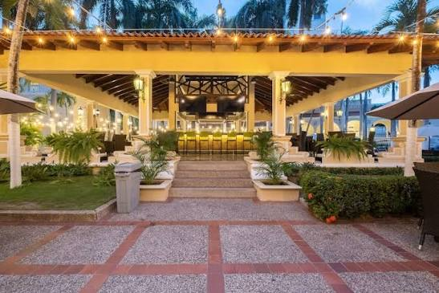

Descubre la historia y el patrimonio de
Barranquilla
Barranquilla
desde la raíz.
Explora sus barrios patrimoniales, conoce su historia, tradiciones y elementos culturales a través de un mapa interactivo.
Explorar mapa
Explora la ciudad
Un mapa lleno de historias
Mapa base © OpenStreetMap contributors
Barrios patrimoniales
Explora los barrios patrimoniales de Barranquilla y descubre su historia, tradiciones y elementos culturales.
-

El Prado
Conocido por su arquitectura de estilo republicano y sus amplias avenidas arboladas.
-
San Roque
Conocido por su arquitectura de estilo republicano y sus amplias avenidas arboladas.
-
Rebolo
Conocido por su arquitectura de estilo republicano y sus amplias avenidas arboladas.
-
Centro Historico
Conocido por su arquitectura de estilo republicano y sus amplias avenidas arboladas.
-
Barrio abajo
Conocido por su arquitectura de estilo republicano y sus amplias avenidas arboladas.